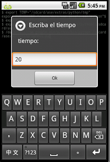
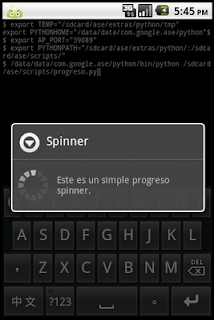

Widgets en Android con python. Parte 3 (barra de spinner)
Publicado el jue 15 julio 2010 en Tutorial Python en Android • 1 min de lectura
A continuación se explicará como usar la barra de spinner (barra de proceso giratoria). Básicamente el programa es el mismo que el del post anterior: Se solicitará el tiempo de ejecución y luego se inicia la barra de spiner.
A continuación se muestra el código:
#Se importa los módulos android y time
import android, time
#Se instancia el objeto Android
droid = android.Android()
#Se define un título y un mensaje
title = 'Spinner'
message = 'Este es un simple progreso spinner.'
#Se solicita se escriba el tiempo a ejecutar
numero = droid.getInput("Escriba el tiempo","tiempo:")
#Se crea la barra de progreso spinner con el título y mensaje
droid.dialogCreateSpinnerProgress(title, message)
#Se muestra la barra de progreso
droid.dialogShow()
#Se genera un tiempo de espera dado el número de entrada
time.sleep(int(numero[1]))
#Se cierra la barra de progreso spinner
droid.dialogDismiss()
A continuación se muestra la figura de la entrada del tiempo de ejecución.

A continuación se muestra la barra de progreso spinner.

Para finalizar se muestra el código qr del programa.
===
¡Haz tu donativo! Si te gustó el artículo puedes realizar un donativo con Bitcoin (BTC) usando la billetera digital de tu preferencia a la siguiente dirección: 17MtNybhdkA9GV3UNS6BTwPcuhjXoPrSzV
O Escaneando el código QR desde billetera: